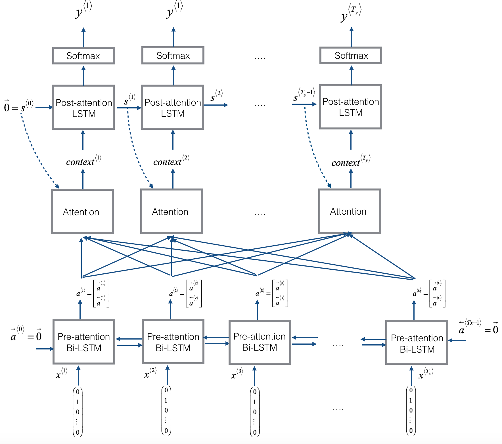
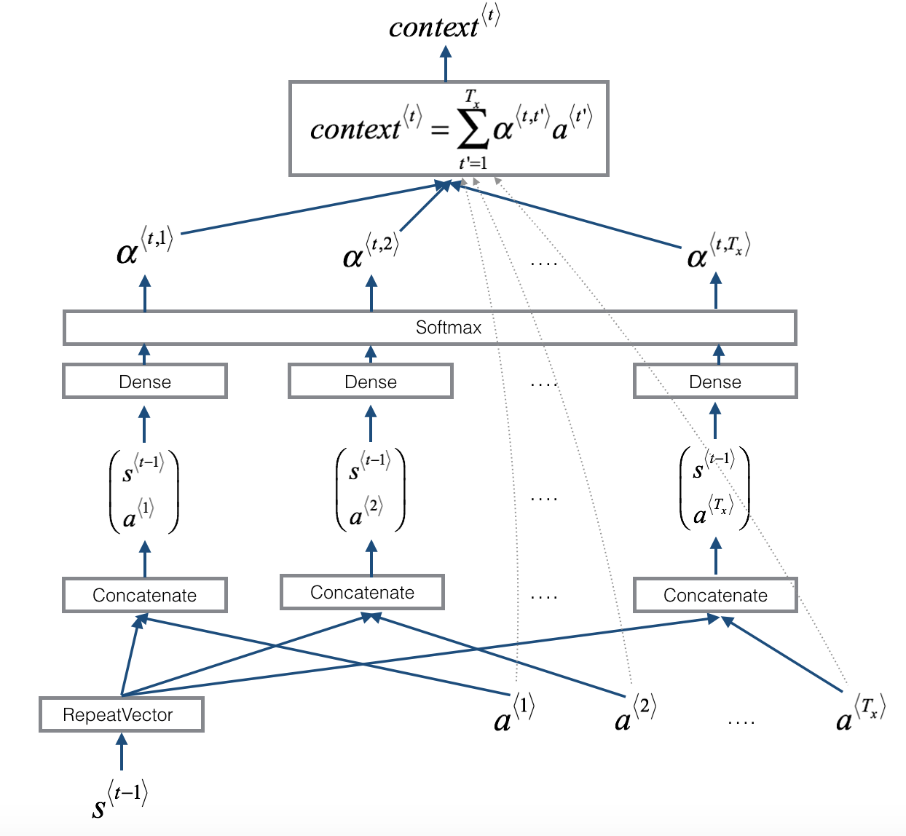
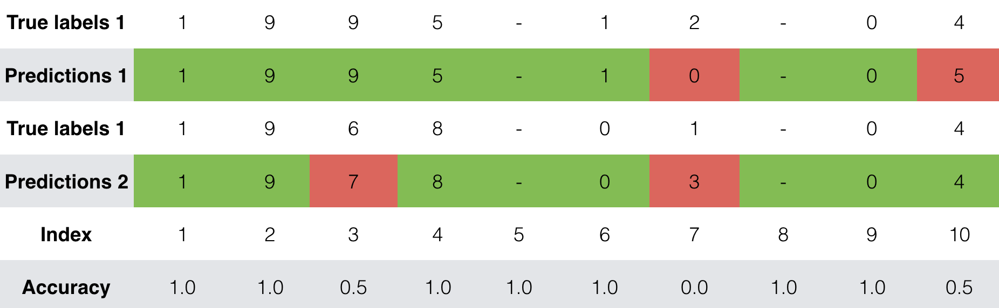
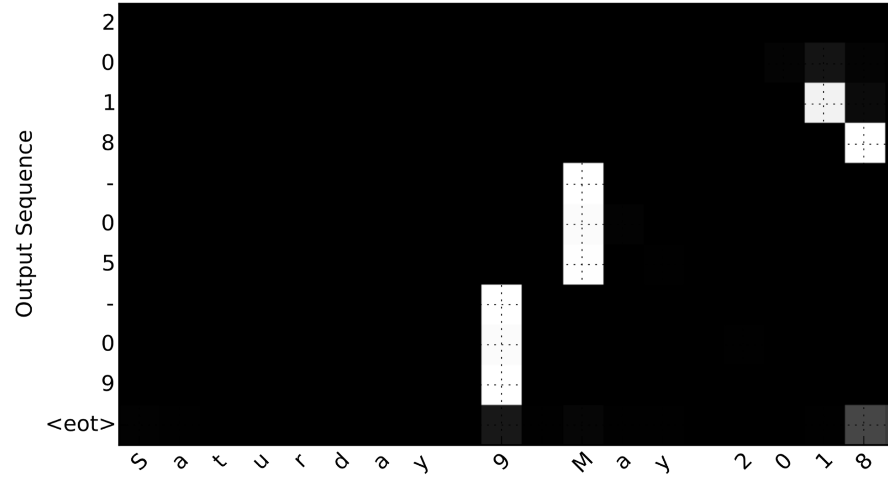

Neural Machine Translation#
Welcome to your first programming assignment for this week!
You will build a Neural Machine Translation (NMT) model to translate human-readable dates (“25th of June, 2009”) into machine-readable dates (“2009-06-25”).
You will do this using an attention model, one of the most sophisticated sequence-to-sequence models.
This notebook was produced together with NVIDIA’s Deep Learning Institute.
Important Note on Submission to the AutoGrader#
Before submitting your assignment to the AutoGrader, please make sure you are not doing the following:
You have not added any extra
printstatement(s) in the assignment.You have not added any extra code cell(s) in the assignment.
You have not changed any of the function parameters.
You are not using any global variables inside your graded exercises. Unless specifically instructed to do so, please refrain from it and use the local variables instead.
You are not changing the assignment code where it is not required, like creating extra variables.
If you do any of the following, you will get something like, Grader Error: Grader feedback not found (or similarly unexpected) error upon submitting your assignment. Before asking for help/debugging the errors in your assignment, check for these first. If this is the case, and you don’t remember the changes you have made, you can get a fresh copy of the assignment by following these instructions.
Table of Contents#
Packages#
### v3.1
from tensorflow.keras.layers import Bidirectional, Concatenate, Permute, Dot, Input, LSTM, Multiply
from tensorflow.keras.layers import RepeatVector, Dense, Activation, Lambda
from tensorflow.keras.optimizers import Adam
from tensorflow.keras.utils import to_categorical
from tensorflow.keras.models import load_model, Model
import tensorflow.keras.backend as K
import tensorflow as tf
import numpy as np
from faker import Faker
import random
from tqdm import tqdm
from babel.dates import format_date
from nmt_utils import *
import matplotlib.pyplot as plt
%matplotlib inline
---------------------------------------------------------------------------
ModuleNotFoundError Traceback (most recent call last)
Cell In[2], line 10
7 import tensorflow as tf
8 import numpy as np
---> 10 from faker import Faker
11 import random
12 from tqdm import tqdm
ModuleNotFoundError: No module named 'faker'
1 - Translating Human Readable Dates Into Machine Readable Dates#
The model you will build here could be used to translate from one language to another, such as translating from English to Hindi.
However, language translation requires massive datasets and usually takes days of training on GPUs.
To give you a place to experiment with these models without using massive datasets, we will perform a simpler “date translation” task.
The network will input a date written in a variety of possible formats (e.g. “the 29th of August 1958”, “03/30/1968”, “24 JUNE 1987”)
The network will translate them into standardized, machine readable dates (e.g. “1958-08-29”, “1968-03-30”, “1987-06-24”).
We will have the network learn to output dates in the common machine-readable format YYYY-MM-DD.
1.1 - Dataset#
We will train the model on a dataset of 10,000 human readable dates and their equivalent, standardized, machine readable dates. Let’s run the following cells to load the dataset and print some examples.
m = 10000
dataset, human_vocab, machine_vocab, inv_machine_vocab = load_dataset(m)
dataset[:10]
You’ve loaded:
dataset: a list of tuples of (human readable date, machine readable date).human_vocab: a python dictionary mapping all characters used in the human readable dates to an integer-valued index.machine_vocab: a python dictionary mapping all characters used in machine readable dates to an integer-valued index.Note: These indices are not necessarily consistent with
human_vocab.
inv_machine_vocab: the inverse dictionary ofmachine_vocab, mapping from indices back to characters.
Let’s preprocess the data and map the raw text data into the index values.
We will set Tx=30
We assume Tx is the maximum length of the human readable date.
If we get a longer input, we would have to truncate it.
We will set Ty=10
“YYYY-MM-DD” is 10 characters long.
Tx = 30
Ty = 10
X, Y, Xoh, Yoh = preprocess_data(dataset, human_vocab, machine_vocab, Tx, Ty)
print("X.shape:", X.shape)
print("Y.shape:", Y.shape)
print("Xoh.shape:", Xoh.shape)
print("Yoh.shape:", Yoh.shape)
You now have:
X: a processed version of the human readable dates in the training set.Each character in X is replaced by an index (integer) mapped to the character using
human_vocab.Each date is padded to ensure a length of \(T_x\) using a special character (< pad >).
X.shape = (m, Tx)where m is the number of training examples in a batch.
Y: a processed version of the machine readable dates in the training set.Each character is replaced by the index (integer) it is mapped to in
machine_vocab.Y.shape = (m, Ty).
Xoh: one-hot version ofXEach index in
Xis converted to the one-hot representation (if the index is 2, the one-hot version has the index position 2 set to 1, and the remaining positions are 0.Xoh.shape = (m, Tx, len(human_vocab))
Yoh: one-hot version ofYEach index in
Yis converted to the one-hot representation.Yoh.shape = (m, Ty, len(machine_vocab)).len(machine_vocab) = 11since there are 10 numeric digits (0 to 9) and the-symbol.
Let’s also look at some examples of preprocessed training examples.
Feel free to play with
indexin the cell below to navigate the dataset and see how source/target dates are preprocessed.
index = 0
print("Source date:", dataset[index][0])
print("Target date:", dataset[index][1])
print()
print("Source after preprocessing (indices):", X[index])
print("Target after preprocessing (indices):", Y[index])
print()
print("Source after preprocessing (one-hot):", Xoh[index])
print("Target after preprocessing (one-hot):", Yoh[index])
2 - Neural Machine Translation with Attention#
If you had to translate a book’s paragraph from French to English, you would not read the whole paragraph, then close the book and translate.
Even during the translation process, you would read/re-read and focus on the parts of the French paragraph corresponding to the parts of the English you are writing down.
The attention mechanism tells a Neural Machine Translation model where it should pay attention to at any step.
2.1 - Attention Mechanism#
In this part, you will implement the attention mechanism presented in the lecture videos.
Here is a figure to remind you how the model works.
The diagram on the left shows the attention model.
The diagram on the right shows what one “attention” step does to calculate the attention variables \(\alpha^{\langle t, t' \rangle}\).
The attention variables \(\alpha^{\langle t, t' \rangle}\) are used to compute the context variable \(context^{\langle t \rangle}\) for each timestep in the output (\(t=1, \ldots, T_y\)).
|
 |
 |
Here are some properties of the model that you may notice:
Pre-attention and Post-attention LSTMs on both sides of the attention mechanism#
There are two separate LSTMs in this model (see diagram on the left): pre-attention and post-attention LSTMs.
Pre-attention Bi-LSTM is the one at the bottom of the picture is a Bi-directional LSTM and comes before the attention mechanism.
The attention mechanism is shown in the middle of the left-hand diagram.
The pre-attention Bi-LSTM goes through \(T_x\) time steps
Post-attention LSTM: at the top of the diagram comes after the attention mechanism.
The post-attention LSTM goes through \(T_y\) time steps.
The post-attention LSTM passes the hidden state \(s^{\langle t \rangle}\) and cell state \(c^{\langle t \rangle}\) from one time step to the next.
Each time step does not use predictions from the previous time step#
Unlike previous text generation examples earlier in the course, in this model, the post-attention LSTM at time \(t\) does not take the previous time step’s prediction \(y^{\langle t-1 \rangle}\) as input.
The post-attention LSTM at time ‘t’ only takes the hidden state \(s^{\langle t\rangle}\) and cell state \(c^{\langle t\rangle}\) as input.
We have designed the model this way because unlike language generation (where adjacent characters are highly correlated) there isn’t as strong a dependency between the previous character and the next character in a YYYY-MM-DD date.
Computing “energies” \(e^{\langle t, t' \rangle}\) as a function of \(s^{\langle t-1 \rangle}\) and \(a^{\langle t' \rangle}\)#
Recall in the lesson videos “Attention Model”, at time 6:45 to 8:16, the definition of “e” as a function of \(s^{\langle t-1 \rangle}\) and \(a^{\langle t \rangle}\).
“e” is called the “energies” variable.
\(s^{\langle t-1 \rangle}\) is the hidden state of the post-attention LSTM
\(a^{\langle t' \rangle}\) is the hidden state of the pre-attention LSTM.
\(s^{\langle t-1 \rangle}\) and \(a^{\langle t \rangle}\) are fed into a simple neural network, which learns the function to output \(e^{\langle t, t' \rangle}\).
\(e^{\langle t, t' \rangle}\) is then used when computing the attention \(\alpha^{\langle t, t' \rangle}\) that \(y^{\langle t \rangle}\) should pay to \(a^{\langle t' \rangle}\).
The diagram on the right of figure 1 uses a
RepeatVectornode to copy \(s^{\langle t-1 \rangle}\)’s value \(T_x\) times.Then it uses
Concatenationto concatenate \(s^{\langle t-1 \rangle}\) and \(a^{\langle t \rangle}\).The concatenation of \(s^{\langle t-1 \rangle}\) and \(a^{\langle t \rangle}\) is fed into a “Dense” layer, which computes \(e^{\langle t, t' \rangle}\).
\(e^{\langle t, t' \rangle}\) is then passed through a softmax to compute \(\alpha^{\langle t, t' \rangle}\).
Note that the diagram doesn’t explicitly show variable \(e^{\langle t, t' \rangle}\), but \(e^{\langle t, t' \rangle}\) is above the Dense layer and below the Softmax layer in the diagram in the right half of figure 1.
We’ll explain how to use
RepeatVectorandConcatenationin Keras below.
Implementation Details#
Let’s implement this neural translator. You will start by implementing two functions: one_step_attention() and model().
one_step_attention#
The inputs to the one_step_attention at time step \(t\) are:
\([a^{<1>},a^{<2>}, ..., a^{<T_x>}]\): all hidden states of the pre-attention Bi-LSTM.
\(s^{<t-1>}\): the previous hidden state of the post-attention LSTM
one_step_attention computes:
\([\alpha^{<t,1>},\alpha^{<t,2>}, ..., \alpha^{<t,T_x>}]\): the attention weights
\(context^{ \langle t \rangle }\): the context vector:
Clarifying ‘context’ and ‘c’#
In the lecture videos, the context was denoted \(c^{\langle t \rangle}\)
In the assignment, we are calling the context \(context^{\langle t \rangle}\).
This is to avoid confusion with the post-attention LSTM’s internal memory cell variable, which is also denoted \(c^{\langle t \rangle}\).
Exercise 1 - one_step_attention#
Implement one_step_attention().
The function
model()will call the layers inone_step_attention()\(T_y\) times using a for-loop.It is important that all \(T_y\) copies have the same weights.
It should not reinitialize the weights every time.
In other words, all \(T_y\) steps should have shared weights.
Here’s how you can implement layers with shareable weights in Keras:
Define the layer objects in a variable scope that is outside of the
one_step_attentionfunction. For example, defining the objects as global variables would work.Note that defining these variables inside the scope of the function
modelwould technically work, sincemodelwill then call theone_step_attentionfunction. For the purposes of making grading and troubleshooting easier, we are defining these as global variables. Note that the automatic grader will expect these to be global variables as well.
Call these objects when propagating the input.
We have defined the layers you need as global variables.
Please run the following cells to create them.
Please note that the automatic grader expects these global variables with the given variable names. For grading purposes, please do not rename the global variables.
Please check the Keras documentation to learn more about these layers. The layers are functions. Below are examples of how to call these functions.
var_repeated = repeat_layer(var1)
concatenated_vars = concatenate_layer([var1,var2,var3])
var_out = dense_layer(var_in)
activation = activation_layer(var_in)
dot_product = dot_layer([var1,var2])
# You cannot edit this cell
# Defined shared layers as global variables
repeator = RepeatVector(Tx)
concatenator = Concatenate(axis=-1)
densor1 = Dense(10, activation = "tanh")
densor2 = Dense(1, activation = "relu")
activator = Activation(softmax, name='attention_weights') # We are using a custom softmax(axis = 1) loaded in this notebook
dotor = Dot(axes = 1)
# UNQ_C1 (UNIQUE CELL IDENTIFIER, DO NOT EDIT)
# GRADED FUNCTION: one_step_attention
def one_step_attention(a, s_prev):
"""
Performs one step of attention: Outputs a context vector computed as a dot product of the attention weights
"alphas" and the hidden states "a" of the Bi-LSTM.
Arguments:
a -- hidden state output of the Bi-LSTM, numpy-array of shape (m, Tx, 2*n_a)
s_prev -- previous hidden state of the (post-attention) LSTM, numpy-array of shape (m, n_s)
Returns:
context -- context vector, input of the next (post-attention) LSTM cell
"""
### START CODE HERE ###
# Use repeator to repeat s_prev to be of shape (m, Tx, n_s) so that you can concatenate it with all hidden states "a" (≈ 1 line)
s_prev = None
# Use concatenator to concatenate a and s_prev on the last axis (≈ 1 line)
# For grading purposes, please list 'a' first and 's_prev' second, in this order.
concat = None
# Use densor1 to propagate concat through a small fully-connected neural network to compute the "intermediate energies" variable e. (≈1 lines)
e = None
# Use densor2 to propagate e through a small fully-connected neural network to compute the "energies" variable energies. (≈1 lines)
energies = None
# Use "activator" on "energies" to compute the attention weights "alphas" (≈ 1 line)
alphas = None
# Use dotor together with "alphas" and "a", in this order, to compute the context vector to be given to the next (post-attention) LSTM-cell (≈ 1 line)
context = None
### END CODE HERE ###
return context
### You cannot edit this cell
# UNIT TEST
def one_step_attention_test(target):
np.random.seed(10)
tf.random.set_seed(10)
m = 10
Tx = 30
n_a = 32
n_s = 64
a = np.random.uniform(1, 0, (m, Tx, 2 * n_a)).astype(np.float32)
s_prev =np.random.uniform(1, 0, (m, n_s)).astype(np.float32) * 1
context = target(a, s_prev)
expected_output = np.load('expected_output_ex1.npy')
assert type(context) == tf.python.framework.ops.EagerTensor, "Unexpected type. It should be a Tensor"
assert tuple(context.shape) == (m, 1, n_s), "Unexpected output shape"
assert np.all(context.numpy() == expected_output), "Unexpected values in the result"
print("\033[92mAll tests passed!")
one_step_attention_test(one_step_attention)
Exercise 2 - modelf#
Implement modelf() as explained in figure 1 and the instructions:
modelffirst runs the input through a Bi-LSTM to get \([a^{<1>},a^{<2>}, ..., a^{<T_x>}]\).Then,
modelfcallsone_step_attention()\(T_y\) times using aforloop. At each iteration of this loop:It gives the computed context vector \(context^{<t>}\) to the post-attention LSTM.
It runs the output of the post-attention LSTM through a dense layer with softmax activation.
The softmax generates a prediction \(\hat{y}^{<t>}\).
Again, we have defined global layers that will share weights to be used in modelf().
### You cannot edit this cell
n_a = 32 # number of units for the pre-attention, bi-directional LSTM's hidden state 'a'
n_s = 64 # number of units for the post-attention LSTM's hidden state "s"
# Please note, this is the post attention LSTM cell.
post_activation_LSTM_cell = LSTM(n_s, return_state = True) # Please do not modify this global variable.
output_layer = Dense(len(machine_vocab), activation=softmax)
Now you can use these layers \(T_y\) times in a for loop to generate the outputs, and their parameters will not be reinitialized. You will have to carry out the following steps:
Propagate the input
Xinto a bi-directional LSTM.Remember that we want the LSTM to return a full sequence instead of just the last hidden state.
Sample code:
sequence_of_hidden_states = Bidirectional(LSTM(units=..., return_sequences=...))(the_input_X)
Iterate for \(t = 0, \cdots, T_y-1\):
Call
one_step_attention(), passing in the sequence of hidden states \([a^{\langle 1 \rangle},a^{\langle 2 \rangle}, ..., a^{ \langle T_x \rangle}]\) from the pre-attention bi-directional LSTM, and the previous hidden state \(s^{<t-1>}\) from the post-attention LSTM to calculate the context vector \(context^{<t>}\).Give \(context^{<t>}\) to the post-attention LSTM cell.
Remember to pass in the previous hidden-state \(s^{\langle t-1\rangle}\) and cell-states \(c^{\langle t-1\rangle}\) of this LSTM
This outputs the new hidden state \(s^{<t>}\) and the new cell state \(c^{<t>}\).
Sample code:
_, next_hidden_state, next_cell_state = post_activation_LSTM_cell(inputs=..., initial_state=[prev_hidden_state, prev_cell_state])
Please note that the layer is actually the “post attention LSTM cell”. For the purposes of passing the automatic grader, please do not modify the naming of this global variable. This will be fixed when we deploy updates to the automatic grader.
Apply a dense, softmax layer to \(s^{<t>}\), get the output.
Sample code:output = output_layer(inputs=...)
Save the output by adding it to the list of outputs.
Create your Keras model instance.
It should have three inputs:
X, the one-hot encoded inputs to the model, of shape (\(T_{x}, humanVocabSize)\)\(s^{\langle 0 \rangle}\), the initial hidden state of the post-attention LSTM
\(c^{\langle 0 \rangle}\), the initial cell state of the post-attention LSTM
The output is the list of outputs.
Sample code
model = Model(inputs=[...,...,...], outputs=...)
# UNQ_C2 (UNIQUE CELL IDENTIFIER, DO NOT EDIT)
# GRADED FUNCTION: model
def modelf(Tx, Ty, n_a, n_s, human_vocab_size, machine_vocab_size=None):
"""
Arguments:
Tx -- length of the input sequence
Ty -- length of the output sequence
n_a -- hidden state size of the Bi-LSTM
n_s -- hidden state size of the post-attention LSTM
human_vocab_size -- size of the python dictionary "human_vocab"
machine_vocab_size -- integer, optional, size of the python dictionary "machine_vocab"
This is not being used
Returns:
model -- Keras model instance
"""
# Define the inputs of your model with a shape (Tx, human_vocab_size)
# Define s0 (initial hidden state) and c0 (initial cell state)
# for the decoder LSTM with shape (n_s,)
X = Input(shape=(Tx, human_vocab_size))
# initial hidden state
s0 = Input(shape=(n_s,), name='s0')
# initial cell state
c0 = Input(shape=(n_s,), name='c0')
# hidden state
s = s0
# cell state
c = c0
# Initialize empty list of outputs
outputs = []
### START CODE HERE ###
# Step 1: Define your pre-attention Bi-LSTM. (≈ 1 line)
a = None
# Step 2: Iterate for Ty steps
for t in range(None):
# Step 2.A: Perform one step of the attention mechanism to get back the context vector at step t (≈ 1 line)
context = None
# Step 2.B: Apply the post-attention LSTM cell to the "context" vector. (≈ 1 line)
# Don't forget to pass: initial_state = [hidden state, cell state]
# Remember: s = hidden state, c = cell state
_, s, c = None
# Step 2.C: Apply Dense layer to the hidden state output of the post-attention LSTM (≈ 1 line)
out = None
# Step 2.D: Append "out" to the "outputs" list (≈ 1 line)
None
# Step 3: Create model instance taking three inputs and returning the list of outputs. (≈ 1 line)
model = None
### END CODE HERE ###
return model
### You cannot edit this cell
# UNIT TEST 1
from test_utils import *
def modelf_test(target):
Tx = 30
n_a = 32
n_s = 64
len_human_vocab = 37
model = target(Tx, Ty, n_a, n_s, len_human_vocab)
print(summary(model))
expected_summary = [['InputLayer', [(None, 30, 37)], 0],
['InputLayer', [(None, 64)], 0],
['Bidirectional', (None, 30, 64), 17920],
['RepeatVector', (None, 30, 64), 0, 30],
['Concatenate', (None, 30, 128), 0],
['Dense', (None, 30, 10), 1290, 'tanh'],
['Dense', (None, 30, 1), 11, 'relu'],
['Activation', (None, 30, 1), 0],
['Dot', (None, 1, 64), 0],
['InputLayer', [(None, 64)], 0],
['LSTM',[(None, 64), (None, 64), (None, 64)], 33024,[(None, 1, 64), (None, 64), (None, 64)],'tanh'],
['Dense', (None, 11), 715, 'softmax']]
assert len(model.outputs) == 10, f"Wrong output shape. Expected 10 != {len(model.outputs)}"
comparator(summary(model), expected_summary)
modelf_test(modelf)
Run the test in the next cell to check if your modelf function is correctly updating the (next) hidden state and cell state.
### You cannot edit this cell
# UNIT TEST 2
def modelf_states_test(target):
Tx = 30
n_a = 32
n_s = 64
len_human_vocab = 37
model = target(Tx, Ty, n_a, n_s, len_human_vocab)
# Create test inputs
X_test = np.random.rand(1, Tx, len_human_vocab)
s0_test = np.zeros((1, n_s))
c0_test = np.zeros((1, n_s))
@tf.function(input_signature=[
tf.TensorSpec(shape=[None, Tx, len_human_vocab], dtype=tf.float32),
tf.TensorSpec(shape=[None, n_s], dtype=tf.float32),
tf.TensorSpec(shape=[None, n_s], dtype=tf.float32)
])
def predict_function(X, s0, c0):
# Call the model directly with input tensors
return model([X, s0, c0])
# Get the outputs of the model for the first five time steps
outputs = predict_function(X_test, s0_test, c0_test)
# Extract the hidden states (s) from the LSTM outputs for each time step
hidden_states = [np.array(output) for output in outputs]
# Check if consecutive hidden states are different
for i in range(len(hidden_states) - 1):
assert not np.allclose(hidden_states[i], hidden_states[i + 1]), (
"Consecutive hidden states should be different.\n"
"Check if the LSTM cell is using the correct previous states.\n"
"Make sure you are using s and c, and NOT using s0 and c0 in Step 2.B."
)
print("\033[32mAll tests passed!\033[0m")
modelf_states_test(modelf)
Run the following cell to create your model.
## You cannot edit this cell
model = modelf(Tx, Ty, n_a, n_s, len(human_vocab))
Troubleshooting Note#
If you are getting repeated errors after an initially incorrect implementation of “model”, but believe that you have corrected the error, you may still see error messages when building your model.
A solution is to save and restart your kernel (or shutdown then restart your notebook), and re-run the cells.
Let’s get a summary of the model to check if it matches the expected output.
model.summary()
Expected Output:
Parameter |
Value |
|---|---|
Total params: |
52,960 |
Trainable params: |
52,960 |
Non-trainable params: |
0 |
bidirectional_1’s output shape |
(None, 30, 64) |
repeat_vector_1’s output shape |
(None, 30, 64) |
concatenate_1’s output shape |
(None, 30, 128) |
attention_weights’s output shape |
(None, 30, 1) |
dot_1’s output shape |
(None, 1, 64) |
dense_3’s output shape |
(None, 11) |
Exercise 3 - Compile the Model#
After creating your model in Keras, you need to compile it and define the loss function, optimizer and metrics you want to use.
Sample code
optimizer = Adam(lr=..., beta_1=..., beta_2=..., decay=...)
model.compile(optimizer=..., loss=..., metrics=[...])
### START CODE HERE ### (≈2 lines)
opt = None # Adam(...)
model.compile(loss = None, optimizer = None, metrics = None)
### END CODE HERE ###
### You cannot edit this cell
# UNIT TESTS
assert opt.lr == 0.005, "Set the lr parameter to 0.005"
assert opt.beta_1 == 0.9, "Set the beta_1 parameter to 0.9"
assert opt.beta_2 == 0.999, "Set the beta_2 parameter to 0.999"
assert opt.decay == 0.01, "Set the decay parameter to 0.01"
assert model.loss == "categorical_crossentropy", "Wrong loss. Use 'categorical_crossentropy'"
assert model.optimizer == opt, "Use the optimizer that you have instantiated"
assert model.compiled_metrics._user_metrics[0] == 'accuracy', "set metrics to ['accuracy']"
print("\033[92mAll tests passed!")
Define inputs and outputs, and fit the model#
The last step is to define all your inputs and outputs to fit the model:
You have input
Xohof shape \((m = 10000, T_x = 30, human\_vocab=37)\) containing the training examples.You need to create
s0andc0to initialize yourpost_attention_LSTM_cellwith zeros.Given the
model()you coded, you need the “outputs” to be a list of 10 elements of shape (m, T_y).The list
outputs[i][0], ..., outputs[i][Ty]represents the true labels (characters) corresponding to the \(i^{th}\) training example (Xoh[i]).outputs[i][j]is the true label of the \(j^{th}\) character in the \(i^{th}\) training example.
### You cannot edit this cell
s0 = np.zeros((m, n_s))
c0 = np.zeros((m, n_s))
outputs = list(Yoh.swapaxes(0,1))
Let’s now fit the model and run it for one epoch.
### You cannot edit this cell
model.fit([Xoh, s0, c0], outputs, epochs=1, batch_size=100)
While training you can see the loss as well as the accuracy on each of the 10 positions of the output. The table below gives you an example of what the accuracies could be if the batch had 2 examples:

We have run this model for longer, and saved the weights. Run the next cell to load our weights. (By training a model for several minutes, you should be able to obtain a model of similar accuracy, but loading our model will save you time.)
### You cannot edit this cell
model.load_weights('models/model.h5')
You can now see the results on new examples.
### You cannot edit this cell
EXAMPLES = ['3 May 1979', '5 April 09', '21th of August 2016', 'Tue 10 Jul 2007', 'Saturday May 9 2018', 'March 3 2001', 'March 3rd 2001', '1 March 2001']
s00 = np.zeros((1, n_s))
c00 = np.zeros((1, n_s))
for example in EXAMPLES:
source = string_to_int(example, Tx, human_vocab)
#print(source)
source = np.array(list(map(lambda x: to_categorical(x, num_classes=len(human_vocab)), source))).swapaxes(0,1)
source = np.swapaxes(source, 0, 1)
source = np.expand_dims(source, axis=0)
prediction = model.predict([source, s00, c00])
prediction = np.argmax(prediction, axis = -1)
output = [inv_machine_vocab[int(i)] for i in prediction]
print("source:", example)
print("output:", ''.join(output),"\n")
You can also change these examples to test with your own examples. The next part will give you a better sense of what the attention mechanism is doing–i.e., what part of the input the network is paying attention to when generating a particular output character.
3 - Visualizing Attention (Optional / Ungraded)#
Since the problem has a fixed output length of 10, it is also possible to carry out this task using 10 different softmax units to generate the 10 characters of the output. But one advantage of the attention model is that each part of the output (such as the month) knows it needs to depend only on a small part of the input (the characters in the input giving the month). We can visualize what each part of the output is looking at which part of the input.
Consider the task of translating “Saturday 9 May 2018” to “2018-05-09”. If we visualize the computed \(\alpha^{\langle t, t' \rangle}\) we get this:

Notice how the output ignores the “Saturday” portion of the input. None of the output timesteps are paying much attention to that portion of the input. We also see that 9 has been translated as 09 and May has been correctly translated into 05, with the output paying attention to the parts of the input it needs to make the translation. The year mostly requires it to pay attention to the input’s “18” in order to generate “2018.”
3.1 - Getting the Attention Weights From the Network#
Lets now visualize the attention values in your network. We’ll propagate an example through the network, then visualize the values of \(\alpha^{\langle t, t' \rangle}\).
To figure out where the attention values are located, let’s start by printing a summary of the model .
model.summary()
Navigate through the output of model.summary() above. You can see that the layer named attention_weights outputs the alphas of shape (m, 30, 1) before dot_2 computes the context vector for every time step \(t = 0, \ldots, T_y-1\). Let’s get the attention weights from this layer.
The function plot_attention_map() pulls out the attention values from your model and plots them.
Note: We are aware that you might run into an error running the cell below despite a valid implementation for Exercise 2 - modelf above. If you have passed all implementations of the exercises above, don’t worry about the error, it will not affect the grading for this assignment.
attention_map = plot_attention_map(model, human_vocab, inv_machine_vocab, "Tuesday 09 Oct 1993", num = 7, n_s = 64);
On the generated plot you can observe the values of the attention weights for each character of the predicted output. Examine this plot and check that the places where the network is paying attention makes sense to you.
In the date translation application, you will observe that most of the time attention helps predict the year, and doesn’t have much impact on predicting the day or month.
Congratulations!#
You have come to the end of this assignment
Here’s what you should remember#
Machine translation models can be used to map from one sequence to another. They are useful not just for translating human languages (like French->English) but also for tasks like date format translation.
An attention mechanism allows a network to focus on the most relevant parts of the input when producing a specific part of the output.
A network using an attention mechanism can translate from inputs of length \(T_x\) to outputs of length \(T_y\), where \(T_x\) and \(T_y\) can be different.
You can visualize attention weights \(\alpha^{\langle t,t' \rangle}\) to see what the network is paying attention to while generating each output.
Congratulations on finishing this assignment! You are now able to implement an attention model and use it to learn complex mappings from one sequence to another.